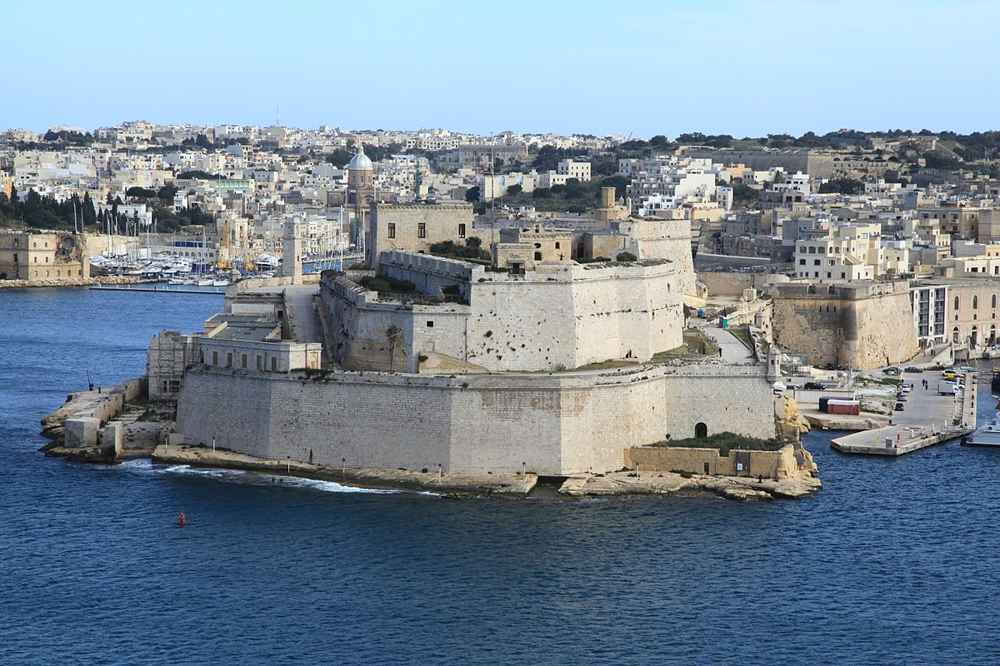

Marsaxlokk
Southern Coast, Malta, Central Mediterranean
Marsaxlokk Market

Described by locals as "filthy" and "full of maltese cockroach" despite the locals loving words the Market is a lively place where you can find food, mainly fish for cheap. The whole area is known for it's fishy smell, probably because most of Malta's fish supplies are caught by fishermen coming from Marsaxlokk port as about 70% of the Maltese fishing fleet is based there. Fish like tuna, and 'lampuki' are caught in abundance between spring and late autumn. On weekdays, the catch is taken to the fish-market in Marsa, but on Sundays, fresh fish is sold by fishermen directly on the quay.
Surrounding Area

Although not Situated directly in Marsaxlokk, the area is surrounded by many Imperial British remenants, mainly in the form of fortresses scattered around the Island. I think these are pretty fascinating sights, which would be a pleasure to explore despite the dilapidated nature of them.